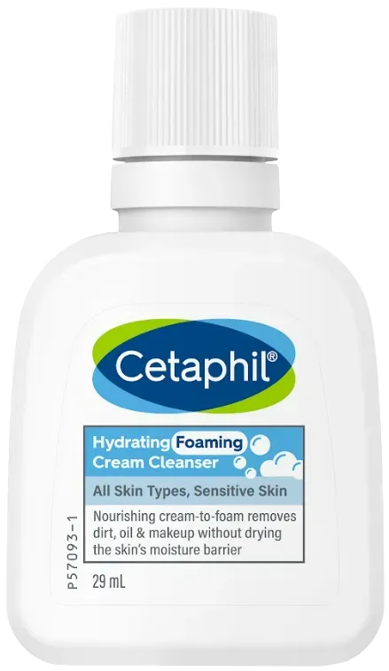

วิเคราะห์ข้อมูลจากรีวิว Jeban Community และ Pantip เพื่อพิสูจน์ว่า Cetaphil Hydrating Foaming Cream Cleanser คุ้มค่าแก่การลงทุนหรือไม่

บทสรุปความงามที่คุณต้องลอง
บทความนี้สรุปจากรีวิวของผู้ใช้จริงและแหล่งข้อมูลที่น่าเชื่อถือ ดังนี้:
เลือกสินค้าที่เหมาะกับคุณที่สุดได้เลยที่นี่